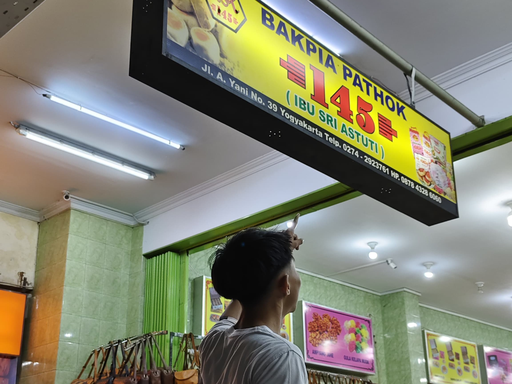

Bakpia
Bakpia Pathok 145
Bakpia Pathok "145" adalah salah satu bakpia khas Yogyakarta yang sudah berdiri sejak tahun 1997. Usaha ini didirikan oleh Ibu Sri Astuti dengan niat dan tekad yang kuat untuk menghadirkan bakpia berkualitas dan bercita rasa tinggi. Bakpia ini dibuat setiap hari sehingga selalu segar dengan kualitas yang sangat terjaga. Harga yang ekonomis, mulai dari Rp10.000 hingga Rp20.000, membuat produk ini menjadi pilihan favorit bagi banyak pelanggan
Varian Rasa
Bakpia Pathok "145" menyediakan berbagai varian rasa seperti kacang hijau, kumbu hitam, cokelat, keju, pandan, dan stroberi. Dari semua varian tersebut, rasa kacang hijau dan kumbu hitam adalah yang paling diminati. Produk ini menggunakan bahan-bahan premium, seperti kacang hijau kupas berkualitas tinggi yang tahan lama, untuk memastikan setiap bakpia memiliki cita rasa terbaik